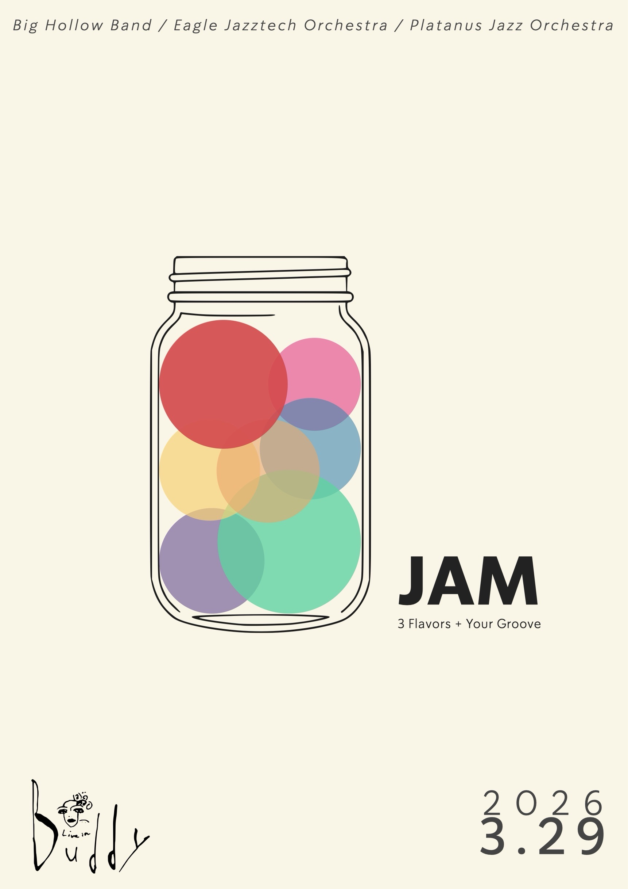
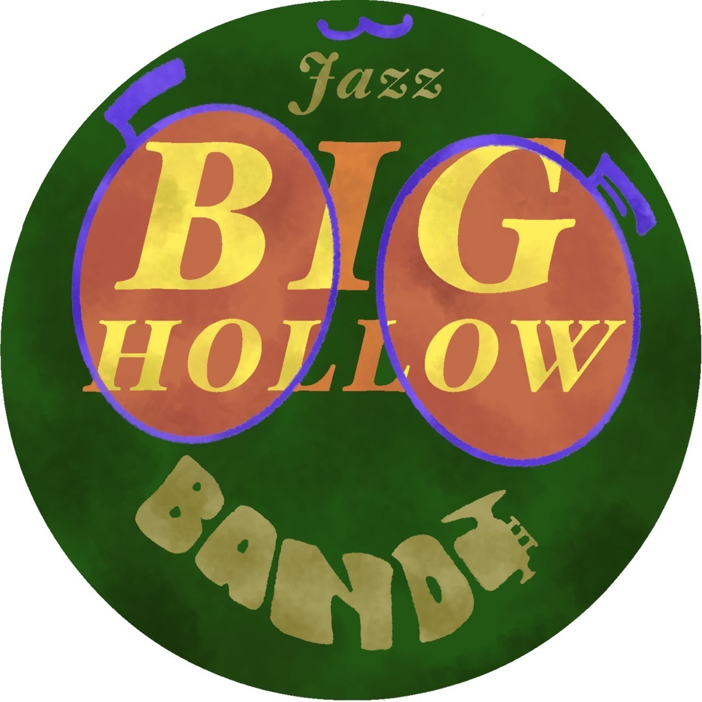
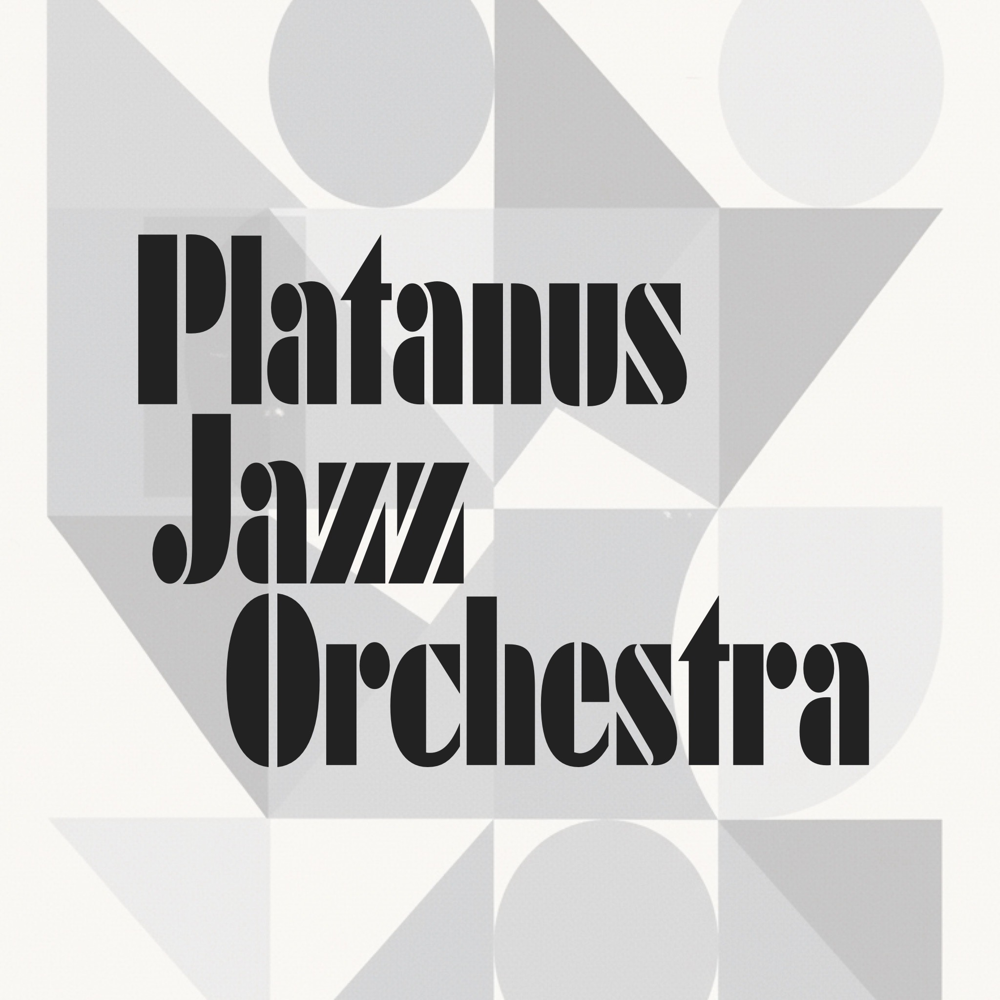

皆様から届いた「ここが好き！」メッセージ
「もし自分が入るなら？」注目の人気パート！
皆様の楽器経験や音楽エピソード！

昭和大学MASと筑波大学Neopolis出身者を中心として結成された本気のファンク＆コンテンポラリーバンド！
上智大学をルーツとし、突き抜けるような爽快スウィングをお届けします！

立教大学出身者を中心に結成。音を通して、聴く人と奏でる人の境界がほどける瞬間を大切にしています。
皆様の感想が今後の活動の糧となります。ぜひ一言お聞かせください！